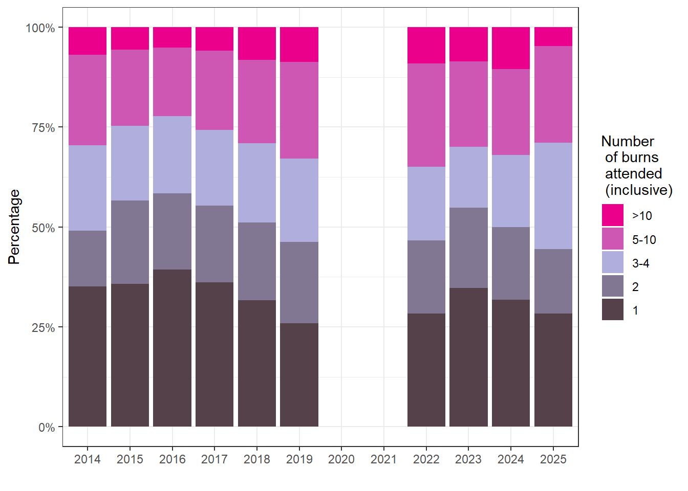

| 2014 | 2015 | 2016 | 2017 | 2018 | 2019 | 2022 | 2023 | 2024 | 2025 | |
|---|---|---|---|---|---|---|---|---|---|---|
| >10 | 7.0% (5.8%, 8.1%) | 5.6% (4.6%, 6.6%) | 5.2% (4.2%, 6.1%) | 5.8% (4.8%, 6.8%) | 8.2% (7.0%, 9.4%) | 8.7% (7.5%, 10.0%) | 9.1% (7.8%, 10.3%) | 8.5% (7.3%, 9.8%) | 10.4% (9.1%, 11.8%) | 4.7% (3.8%, 5.6%) |
| 5-10 | 22.6% (20.8%, 24.4%) | 19.0% (17.3%, 20.8%) | 17.1% (15.5%, 18.8%) | 19.8% (18.1%, 21.6%) | 20.8% (19.0%, 22.6%) | 24.2% (22.3%, 26.0%) | 25.8% (23.9%, 27.7%) | 21.4% (19.6%, 23.2%) | 21.6% (19.8%, 23.4%) | 24.2% (22.3%, 26.1%) |
| 3-4 | 21.3% (19.5%, 23.1%) | 18.7% (17.0%, 20.4%) | 19.3% (17.6%, 21.0%) | 19.0% (17.3%, 20.7%) | 19.9% (18.1%, 21.6%) | 20.8% (19.1%, 22.6%) | 18.4% (16.7%, 20.1%) | 15.2% (13.7%, 16.8%) | 18.0% (16.3%, 19.7%) | 26.7% (24.7%, 28.6%) |
| 2 | 14.0% (12.5%, 15.5%) | 20.9% (19.1%, 22.7%) | 19.1% (17.4%, 20.8%) | 19.1% (17.4%, 20.9%) | 19.4% (17.7%, 21.2%) | 20.4% (18.6%, 22.2%) | 18.3% (16.6%, 20.0%) | 20.1% (18.3%, 21.9%) | 18.1% (16.4%, 19.8%) | 16.0% (14.4%, 17.6%) |
| 1 | 35.1% (33.0%, 37.2%) | 35.8% (33.7%, 37.9%) | 39.3% (37.2%, 41.4%) | 36.2% (34.1%, 38.3%) | 31.7% (29.7%, 33.7%) | 25.9% (24.0%, 27.8%) | 28.3% (26.4%, 30.3%) | 34.7% (32.7%, 36.8%) | 31.8% (29.8%, 33.9%) | 28.4% (26.4%, 30.4%) |